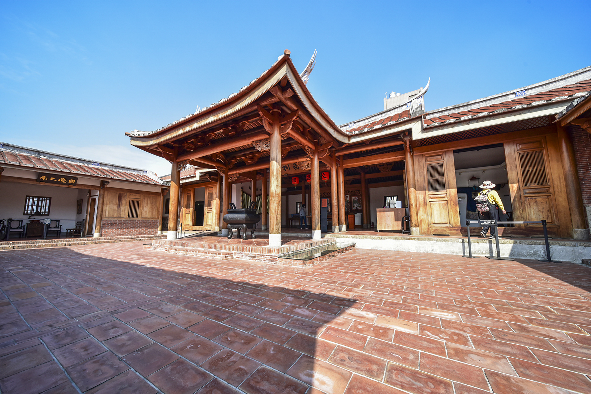

09:00 捷運左營站 → 蓮池潭
蓮池潭
相關書籍：《琥珀金黃葉》（彭瑞金）
本書由左營籍作家彭瑞金撰寫，以第一人稱視角回顧童年、父親與故鄉的記憶，蓮池潭是他筆下心靈的中心。
「夕陽照耀在蓮池潭水面上，如同琥珀凍結了時光。」
蓮池潭象徵著過去與現在的交錯，是記憶沉澱和時間懸浮的場所。
龍虎塔、春秋閣、舊城門等歷史空間，在書中代表身份與土地的聯繫。
建議在參觀時朗讀書中段落，感受地方文學的地景共鳴。

10:30 莒光路、鳳翔一路眷村群
左營眷村群
相關書籍：《琥珀金黃葉》補充、《黃昏的故鄉》部分情節
左營眷村如貿、明德新村為許多戰後家庭的記憶場。
眷村呈現「他鄉即故鄉」的矛盾認同，在《琥珀金黃葉》中有深入描寫。
若加入《黃昏的故鄉》或《果貿社區記事》，可補足左營＝國族記憶場的文化脈絡。
12:00 午餐：左營特色小吃
將軍餅、海青王酥等
眷村小吃融合各省風味，是記憶與文化的味覺延伸。
食物作為地方敘事的一部分，也能成為文學田野的材料來源。
13:30 捷運左營 → 鳳山站
移動轉場
從「北方的軍事記憶場域」進入「南方的文學與庶民生活場域」。
鳳山與左營雖同屬高雄，卻各具文化層次，鳳山更帶有古蹟與文人底蘊。
14:00 鳳山溪、曹公圳 → 鳳山公園
《昨日之河》的現場閱讀
相關書籍：《昨日之河》（李黎）
李黎追憶母親的散文小說，以鳳山溪和鳳山公園為背景。
鳳山溪象徵一條「日治→戰後→現代」的歷史之河，連結時代與情感。
沿溪步行，朗讀書中片段，體會母女情感與時代記憶的交織。

15:30 鳳儀書院 / 鳳山老街
知識與地方誌的交會
相關書籍：《文學鳳山地誌》、延伸：《昨日之河》
鳳儀書院為全台最大官辦書院，象徵教育與知識傳承。
《昨日之河》中也提及書院與家庭教育的連結。
鳳山老街可觀察老藥房、布行等生活史素材，作為地方誌的觀察對象。
17:00 鳳山大東文化藝術中心 / 大東夜市
結語場域：從記憶到日常
大東文化中心代表「當代再生的城市空間」，承載藝術與公共性。
大東夜市象徵「庶民文化的當代日常」，是地方記憶的延續。
透過兩地對比，形成「文學地景的時間層次」，構築開放式的旅程結尾。